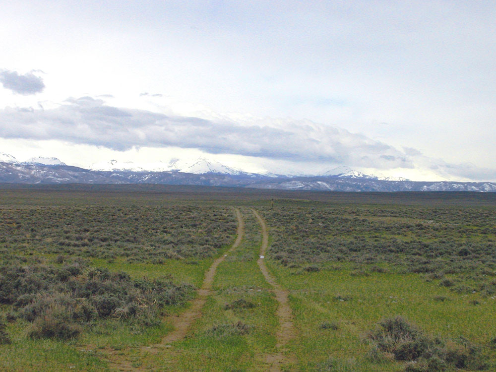
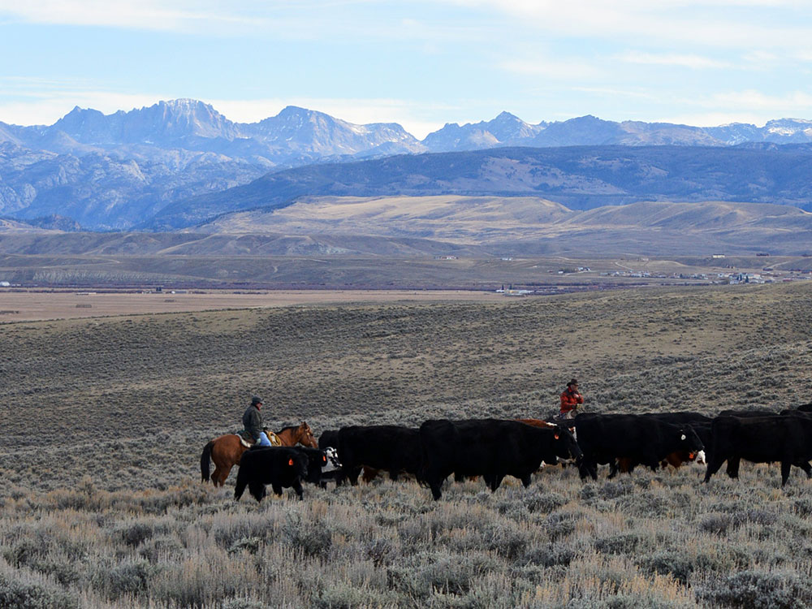
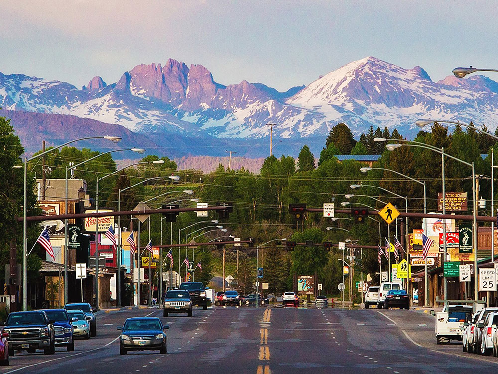
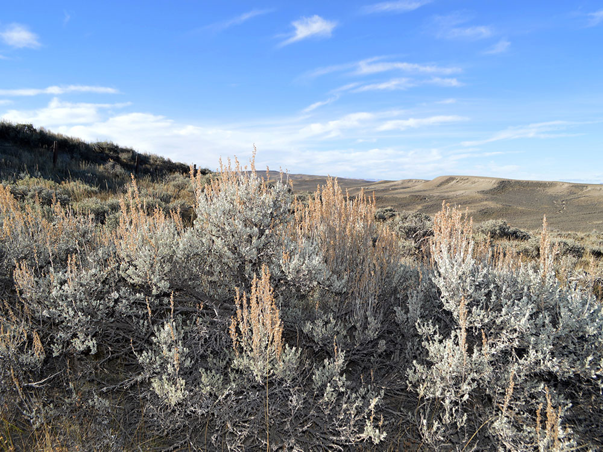

Important hunting outfitting town and a gateway to the Wind River Mountains and the Jackson Hole area
General Information
Accepts America The Beautiful Pass
How to Get There
From Rock Springs, WY (77 mi): Take US-191 North through the high desert to reach downtown Pinedale at the base of the Wind River Range.
Overview
Pinedale is a small town in western Wyoming, in the Upper Green River Valley at the base of the Wind River Range, and it is known as a gateway to some of the most remote and spectacular mountain wilderness in the lower 48 states. The town of about 2,000 people, the county seat of Sublette County, has a quiet, Western atmosphere, with ranches, a historic main street, and the Museum of the Mountain Man. It is a popular base for hunters, anglers, backpackers, and horseback riders.
Visitors come to Pinedale for the Museum of the Mountain Man, for fishing and boating at Fremont Lake, and for hiking and backpacking in the Bridger Wilderness and the Wind River Range. They also come for the Green River Rendezvous in July, for skiing and snowmobiling in winter, and for the dark skies and the wildlife of the valley.
History
The Shoshone and other peoples hunted in the valley, and from 1824 to 1840, the Upper Green River was the site of the annual Rendezvous, when fur trappers, traders, and Native Americans gathered to trade furs and supplies, and Pinedale is near the site of several of them. Pinedale was founded in 1904 and named for the pine forests nearby, and it became the county seat of Sublette County in 1921, and a center for ranching and for the early dude ranches. The valley's natural gas fields, the Pinedale Anticline, brought a boom in the early 2000s, and the town has continued to grow with tourism.
Sightseeing and Popular Landmarks
The Museum of the Mountain Man has exhibits on the fur trade, the Rendezvous, and the Plains Indians, with a collection of artifacts of the trapper era, and the Sublette County Visitor Center and the Pinedale Fine Arts Council are on Pine Street. Fremont Lake, a 12-mile-long glacial lake, is a short drive from town, and the Green River Lakes, at the head of the Green River, have a famous view of Square Top Mountain. The Wind River Range and Gannett Peak, the highest peak in Wyoming at 13,804 feet, lie to the east.
Culture and Museums
The Museum of the Mountain Man, run by the Sublette County Historical Society, is a major museum on the history of the Rocky Mountain fur trade, and the Green River Rendezvous in July reenacts the trappers' gatherings with costumes, craft demonstrations, and a pageant. The Pinedale Fine Arts Council and the Wind River Mountain Men organization also offer events, and the Sublette County Rodeo is held in July.
Parks
The Bridger Wilderness, in the Bridger-Teton National Forest, has more than 1,300 lakes, as well as glaciers, and is accessible via trailheads at Elkhart Park and Green River Lakes. Fremont Lake has fishing, boating, and camping, and the Wind River Range is popular for backpacking, climbing, and horse packing. The Hoback Canyon and the Green River offer fly fishing, and Teton and Yellowstone National Parks are within a few hours.
Seasons and Weather
Pinedale has a cold, semi-arid continental climate at an elevation of 7,200 feet. Summers are mild, with highs in the 70s°F and cool nights, and winters are long and very cold, with highs in the 20s°F, lows below zero, and about 80 inches of snow. The best time to hike is from July to September, and snow can fall in any month.
Things to Do
Explore the Wind River Range
Pinedale serves as a gateway to Wyoming's spectacular Wind River Range, offering access to alpine lakes, rugged mountain scenery, backpacking routes, and some of the most renowned wilderness hiking in the state. Popular destinations include Titcomb Basin and Cirque of the Towers, attracting hikers, climbers, and outdoor enthusiasts from around the world.
Drive the Skyline Scenic Drive
The Skyline Scenic Drive is one of the area's most popular attractions, featuring sweeping views of Fremont Lake, Half Moon Lake, mountain ranges, forests, and open Wyoming landscapes. The drive provides excellent opportunities for sightseeing, photography, and wildlife viewing.
Visit Fremont Lake
Fremont Lake is Wyoming's second-largest natural lake and a favorite destination for boating, kayaking, paddleboarding, fishing, and relaxing along the shoreline. The crystal-clear water and dramatic mountain backdrop make it one of the region's most scenic recreational areas.
Discover Green River Lakes
Green River Lakes offers stunning views of Squaretop Mountain and is considered one of Wyoming's iconic landscapes. Visitors can enjoy hiking, fishing, camping, wildlife viewing, and photography while exploring this beautiful section of the Bridger-Teton National Forest.
Visit the Museum of the Mountain Man
The Museum of the Mountain Man highlights the history of the Rocky Mountain fur trade and the legendary mountain men who explored the American West. Exhibits showcase the culture, equipment, and stories of early trappers and traders who traveled through the region.
Relax at Granite Hot Springs
Located within the nearby Gros Ventre Mountains, Granite Hot Springs provides a unique opportunity to soak in naturally heated mineral water while surrounded by mountain scenery. The area is popular year-round and offers easy access to nearby trails and outdoor recreation.
Experience Wildlife Viewing
The forests, rivers, lakes, and mountain valleys surrounding Pinedale support abundant wildlife. Visitors may encounter moose, elk, mule deer, pronghorn, bears, and numerous bird species while exploring the area.
Visit White Pine Ski Resort
White Pine Ski Resort offers family-friendly skiing and snowboarding during the winter season. During summer, the surrounding mountains provide opportunities for sightseeing, hiking, and enjoying alpine scenery.
Top Trails
Elkhart Park Trailhead to Wind River Backcountry
Length: Multiple route options available
Elevation Gain: Varies by destination
Difficulty: Moderate to Strenuous
Elkhart Park Trailhead is one of the primary access points into the Wind River Range wilderness. From here, hikers can reach alpine lakes, mountain passes, Titcomb Basin, and other renowned backcountry destinations.
Green River Lakes Trails
Length: Multiple trail options available
Elevation Gain: Light to Moderate
Difficulty: Easy to Moderate
Trails around Green River Lakes provide magnificent views of Squaretop Mountain, lakeshore scenery, wildlife habitat, and access to deeper wilderness routes. These trails are popular for hiking, photography, and day excursions.
Fremont Lake Area Trails
Length: Various route options
Elevation Gain: Light to Moderate
Difficulty: Easy to Moderate
Several trails around Fremont Lake offer opportunities to experience lakeside views, forested terrain, mountain scenery, and peaceful outdoor recreation close to downtown Pinedale.
This article uses material from Wikipedia as well as information from official tourism and institutional sources. Key references include Pinedale Chamber of Commerce, Museum of the Mountain Man, Bridger-Teton National Forest, Wyoming Office of Tourism, and National Weather Service Riverton. Wikipedia material is from the article "Pinedale, Wyoming", and is available under the Creative Commons Attribution-Share-Alike License 3.0.

_on_the_California_and_Oregon_National_Historic_Trails_(2005)_(c535029f-8e58-4f2c-ac58-0ceda6c9ce98).JPG){kind=link}

.jpg){kind=link}



.jpg){kind=link}